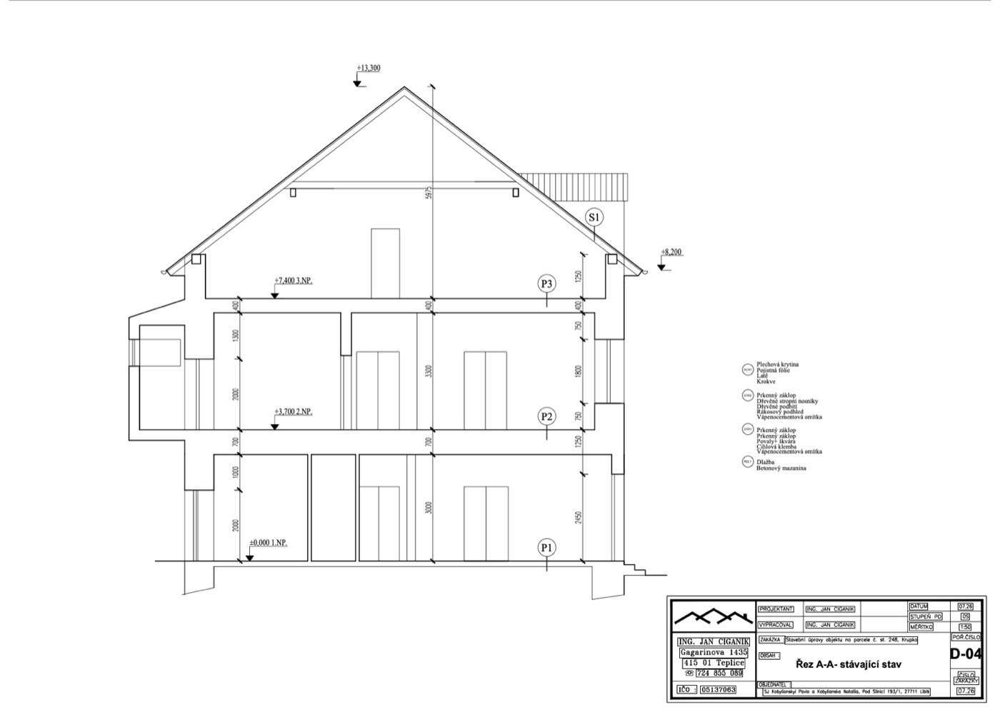
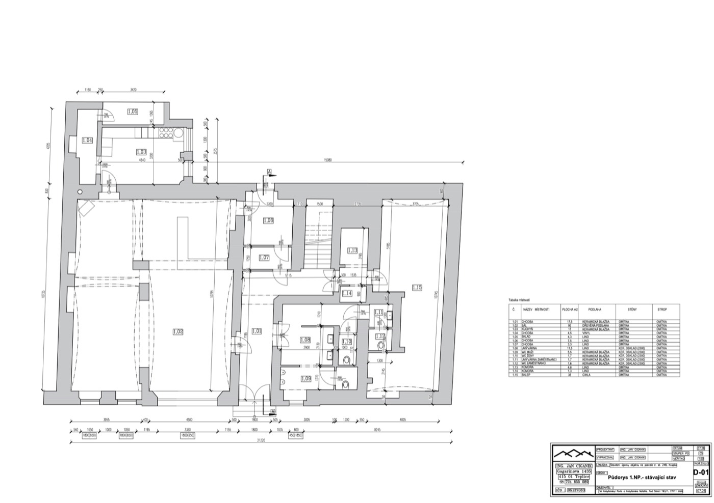
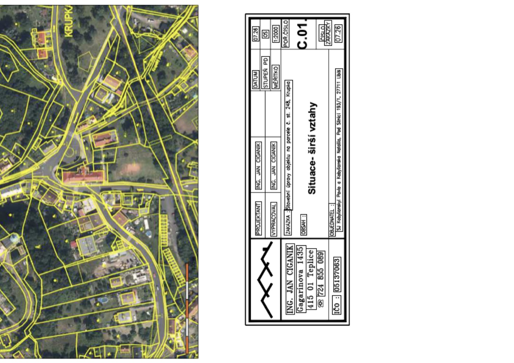
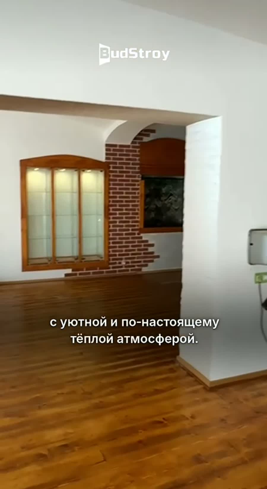
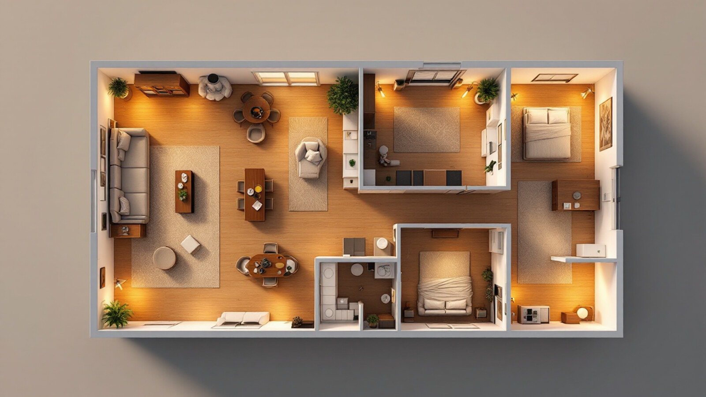

Реальные чертежиSkutečné výkresyReal Drawings
Семь чертежей stávající stavSedm výkresů stávajícího stavuSeven As-Built Drawings









Это больше не «объект без чертежей». Проектную документацию ведёт Ing. Jan Ciganik — autorizovaný projektant (Teplice, IČO 05137063). Обмеры существующего состояния (stávající stav) выполнены в 07/2026: семь чертежей — ситуация ×2, фасад, поэтажные планы 1–3.NP и разрез A–A. Парцела č. st. 248, k.ú. Krupka. Už to není „objekt bez výkresů". Projektovou dokumentaci vede Ing. Jan Ciganik — autorizovaný projektant (Teplice, IČO 05137063). Zaměření stávajícího stavu proběhlo v 07/2026: sedm výkresů — situace ×2, pohled, půdorysy 1.–3. NP a řez A–A. Parcela č. st. 248, k. ú. Krupka. This is no longer an "asset without drawings". The design documentation is led by Ing. Jan Ciganik, an authorized designer (autorizovaný projektant; Teplice, company ID 05137063). The as-built survey (stávající stav) was completed in 07/2026: seven drawings — site plans ×2, elevation, floor plans 1–3.NP and section A–A. Plot no. st. 248, cadastre of Krupka.
Ing. Jan Ciganik — autorizovaný projektant, Teplice, IČO 05137063. Нанят владельцем; ведёт документацию от обмеров до деления на bytové jednotky.Ing. Jan Ciganik — autorizovaný projektant, Teplice, IČO 05137063. Najat vlastníkem; vede dokumentaci od zaměření po dělení na bytové jednotky.Ing. Jan Ciganik — authorized designer, Teplice, company ID 05137063. Hired by the owner; leads the documentation from the survey through the division into residential units.
Семь чертежей stávající stav: ситуация C.01 и C.02, фасад (pohled), планы 1.NP / 2.NP / 3.NP, разрез A–A. Реальная геометрия здания зафиксирована — модель опирается на обмеры, а не на оценки «на глаз».Sedm výkresů stávajícího stavu: situace C.01 a C.02, pohled, půdorysy 1. NP / 2. NP / 3. NP, řez A–A. Skutečná geometrie budovy je zaměřena — model stojí na datech, ne na odhadech „od oka".Seven as-built drawings: site plans C.01 and C.02, the elevation, floor plans 1.NP / 2.NP / 3.NP, section A–A. The building's real geometry is now measured — the model rests on survey data, not eyeball estimates.
Сейчас идёт деление здания на bytové jednotky вместе с проектантом. Владелец, 19.11.2026: «начальные замеры… сейчас делим на быты и рисуем квартиры».Právě probíhá dělení budovy na bytové jednotky společně s projektantem. Vlastník, 19. 11. 2026: „úvodní zaměření… teď dělíme na byty a kreslíme jednotlivé byty".The building is now being divided into residential units together with the designer. The owner, 19 Nov 2026: "initial measurements done… we are now dividing into units and drawing the apartments."




Реальные обмеры 07/2026 сняли риск неизвестной геометрии: площади, высоты и конструктивная схема зафиксированы в чертежах, а не оценены по фотографиям. Смета и юнит-микс считаются от измеренного здания.Skutečné zaměření 07/2026 odstranilo riziko neznámé geometrie: plochy, výšky a konstrukční schéma jsou zachyceny ve výkresech, ne odhadnuty z fotografií. Rozpočet i mix jednotek se počítají ze zaměřené budovy.The real 07/2026 survey removed the unknown-geometry risk: areas, heights and the structural scheme are captured in drawings, not guessed from photos. The budget and unit mix are computed from a measured building.
Деление на bytové jednotky — юридическая основа prohlášení vlastníka: каждый юнит становится самостоятельным предметом права. Это открывает condo-fallback exit — поштучную продажу юнитов (ориентир Ústecko 35–45 тыс. CZK/м²), независимую от «правильного покупателя» целого объекта.Dělení na bytové jednotky je právním základem prohlášení vlastníka: každá jednotka se stává samostatným předmětem práva. To otevírá condo-fallback exit — prodej jednotek po kusech (orientačně Ústecko 35–45 tis. CZK/m²), nezávislý na „správném kupci" celého objektu.The division into residential units is the legal basis of the prohlášení vlastníka (condominium declaration): each unit becomes a separate legal object. That opens the condo-fallback exit — unit-by-unit sales (Ústecko benchmark 35–45k CZK/m²), independent of finding the "right buyer" for the whole asset.
Объект оформлен на владельцев Pavlo + Nataliia Kobylianski в режиме SJM (společné jmění manželů) — прозрачная титульная позиция для вклада актива в PropCo по znalecký posudek. Выпис LV — в чек-листе data room.Objekt je zapsán na vlastníky Pavlo + Nataliia Kobylianski v režimu SJM (společné jmění manželů) — transparentní titulní pozice pro vklad aktiva do PropCo dle znaleckého posudku. Výpis LV je v checklistu data roomu.The asset is registered to owners Pavlo + Nataliia Kobylianski under SJM (community marital property) — a transparent title position for contributing the asset into PropCo at the appraised value. The LV extract is on the data-room checklist.
Честная оговорка: документация в ранней стадии — выполнены обмеры stávající stav и идёт деление на jednotky; DSP/DPS, статика крыши и závazné stanovisko MPZ впереди (T0-гейт сохраняется). Мы показываем реальный статус, а не выдаём обмеры за готовый проект. Poctivá výhrada: dokumentace je v rané fázi — hotové je zaměření stávajícího stavu a probíhá dělení na jednotky; DSP/DPS, statika střechy a závazné stanovisko MPZ jsou teprve před námi (T0 gate zůstává). Ukazujeme skutečný stav, nevydáváme zaměření za hotový projekt. An honest caveat: the documentation is at an early stage — the as-built survey is done and unit division is underway; DSP/DPS, roof statics and the binding MPZ opinion still lie ahead (the T0 gate stands). We show the real status rather than passing a survey off as a finished design.

Экстерьерные виды по этим же чертежам — на страницах Обзор и Объект. Все 3D-виды — концепт-визуализации на основе обмеров 07/2026, не фотографии. Exteriérové pohledy dle týchž výkresů najdete na stránkách Přehled a Objekt. Všechny 3D pohledy jsou konceptní vizualizace na základě zaměření 07/2026, nikoli fotografie. Exterior views from these same drawings appear on the Overview and Object pages. All 3D views are concept visualizations based on the 07/2026 survey, not photographs.
К моделям для инвестораK modelům pro investoraTo the Investor Models К финансовой моделиK finančnímu modeluTo the Financial Model